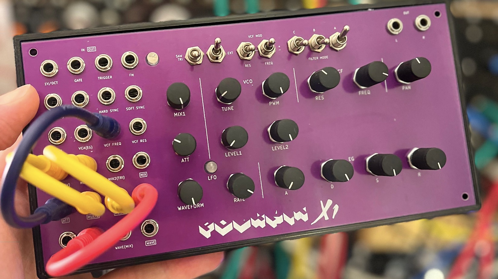

Full analog, semi modular (!), patchable synthesizer. It is an interface that works in conjunction with open source voice card.

Voice card specs - Single oscillator with saw, triangle and pulse output - Multiple VCAs to blend between different input signals, a main VCA for the envelope and a panning VCA for stereo output - An additional external input that can be mixed in, eg. a noise signal - One envelope generator for the VCA. It can modulate filter frequency and resonance, also with an inverted signal - A pole-mixing multimode filter with 8 filter responses: - 4P LP - 2P LP - 4P HP - 2P HP - 4P BP - 2P BP - 3P AP + 1P LP - 4P N - There are multiple options two switch and blend between different signals and filter responses - PWM, FM and synchronisation inputs
All DB data
- Name: Polykit X1
- Author: Polykit
- Link: https://github.com/polykit/polykit-x-monosynth
- Demo: https://www.youtube.com/watch?v=aMLMR25Tyi0
- Picture: ../pics/polykit-x1.jpg
- Description: Full analog, semi modular (!), patchable synthesizer. It is an interface that works in conjunction with open source voice card.
- Notes: **Voice card specs - Single oscillator with saw, triangle and pulse output - Multiple VCAs to blend between different input signals, a main VCA for the envelope and a panning VCA for stereo output - An additional external input that can be mixed in, eg. a noise signal - One envelope generator for the VCA. It can modulate filter frequency and resonance, also with an inverted signal - A pole-mixing multimode filter with 8 filter responses: - 4P LP - 2P LP - 4P HP - 2P HP - 4P BP - 2P BP - 3P AP + 1P LP - 4P N - There are multiple options two switch and blend between different signals and filter responses - PWM, FM and synchronisation inputs **
- Artifacts: {“Schematic”=>true}{“PCB”=>true}{“BOM”=>true}{“FW”=>false}{“Docs”=>false}{“Enclosure”=>true}
- Tags: MonophonicModular
- Level: Intermediate
{kind=link}